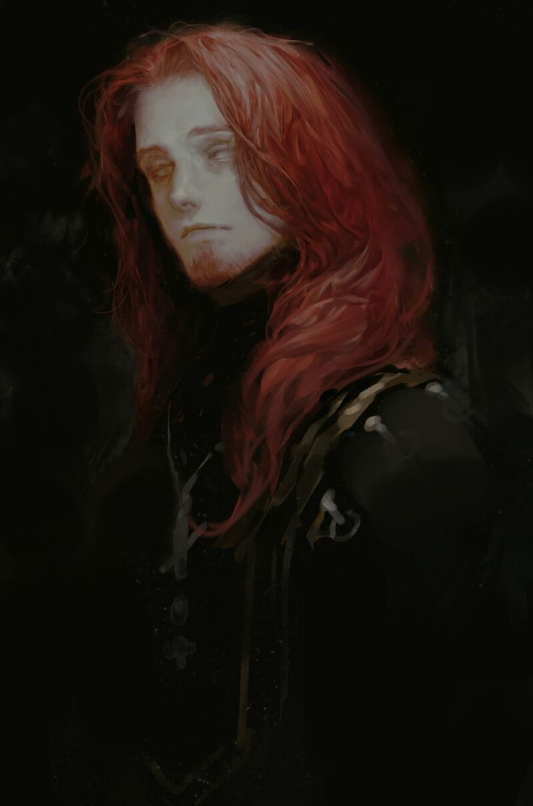
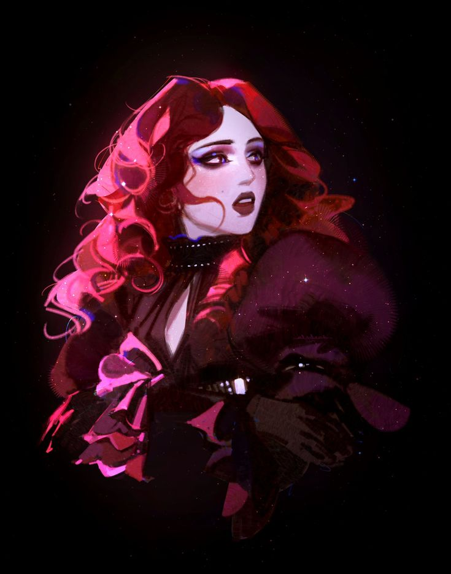
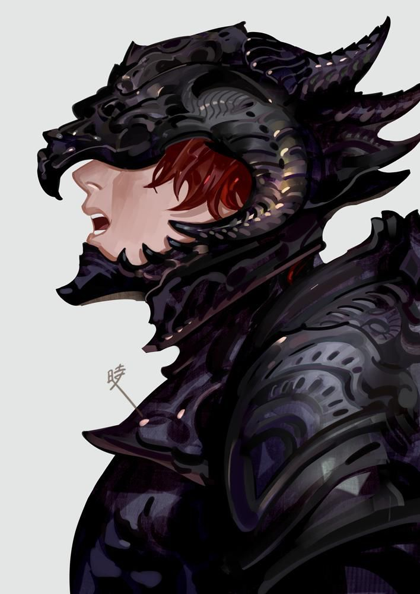

A Família Velvet governa Yǎnhuà, na fronteira com a Floresta Ardente — a mesma mata que moldou, de formas muito diferentes, o vínculo de cada um deles com a Marechal Real e com o próprio reino.
✦ O MARQUÊS DE YǍNHUÀ

✦ família velvet
Su Velvet
Sua família vivia nas fronteiras com a Floresta Ardente, o que chamou a atenção de Xiu ainda antes de ela se tornar Marechal. Ensinaram à jovem truques que só a experiência poderia dar — e, como gratidão, ela lhes concedeu um posto para honrar. Su nunca conheceu Xiu pessoalmente, exceto quando ela ainda era um bebê, mas frequenta o palácio e mantém boa relação com ela; sua personalidade pacífica é um contraste e tanto nessa relação.
✦ OS FILHOS

✦ família velvet
Zhū Velvet
Filha mais velha de Su, cresceu entre paredes de pedra quente e a segurança que o pai nunca teve. Mas, entre todos, é nela que mora o fogo e a perseverança de trilhar e escolher o próprio caminho.

✦ família velvet
Yìchén Velvet
Filho mais novo, esconde-se atrás de um elmo negro. Passou anos entre as árvores da Floresta Ardente — não quer contar o que viveu ou viu lá, e ainda está se recuperando do que quer que tenha acontecido na mata.